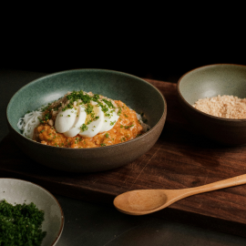

Filipino Breakfast
Garlic rice, longanisa sausage or tocino, topped with egg.

Chicken Adobo
Grilled chicken thigh with garlic rice or rice noodles.

Lumpia Shanghai
Fried pork spring roll and chili sauce.